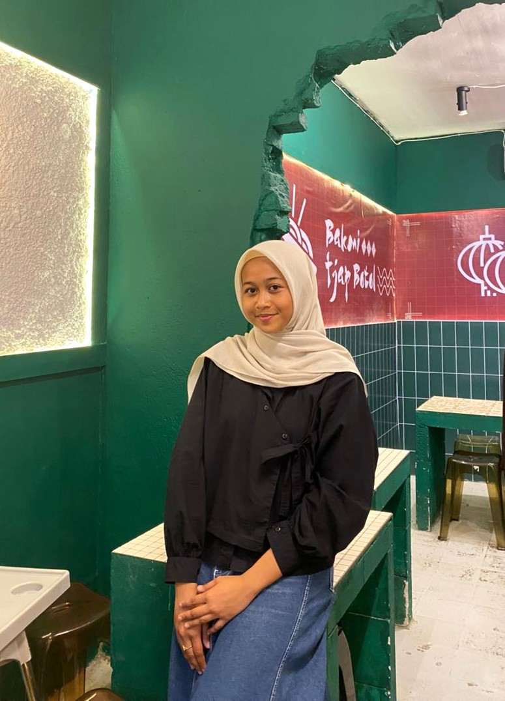

Tentang Saya
Haii, saya seorang Mahasiswi yang sedang mempelajari tentang pengembangan web, saat ini saya mempelajari HTML. Belajar web merupakan hal baru bagi saya, walaupun sulit saya menyukainya karena ini merupakan hal baru bagi saya dan ada tantangan tersendirinya, serta ada rasa senang dan bangga jika saya berhasil membuat halaman web sendiri.
Informasi Pribadi
- Nama: Surya Ningshi
- Alamat: Desa Cani Sirenreng, Kec. Ulaweng
- Pendidikan: Universitas Muhammadiyah Bone
Keahlian
Data Visualization (Dasar)
Microsoft Word
Manajemen Waktu
Proyek
Beberapa karya yang pernah saya buat meliputi visualisasi data sederhana menggunakan Microsoft Excel dan Membuat halaman web sederhana yang berisi portofolio pribadi menggunakan HTML & CSS.